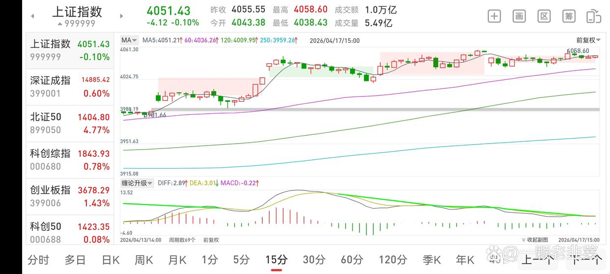
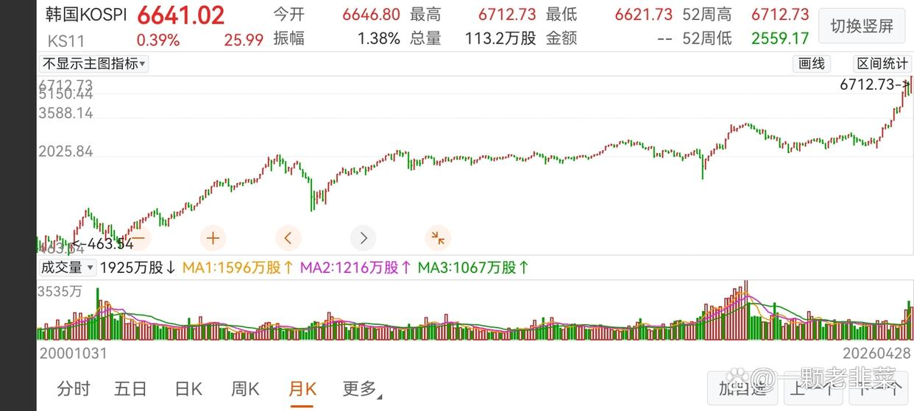
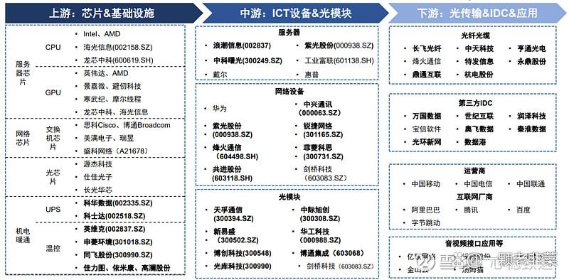
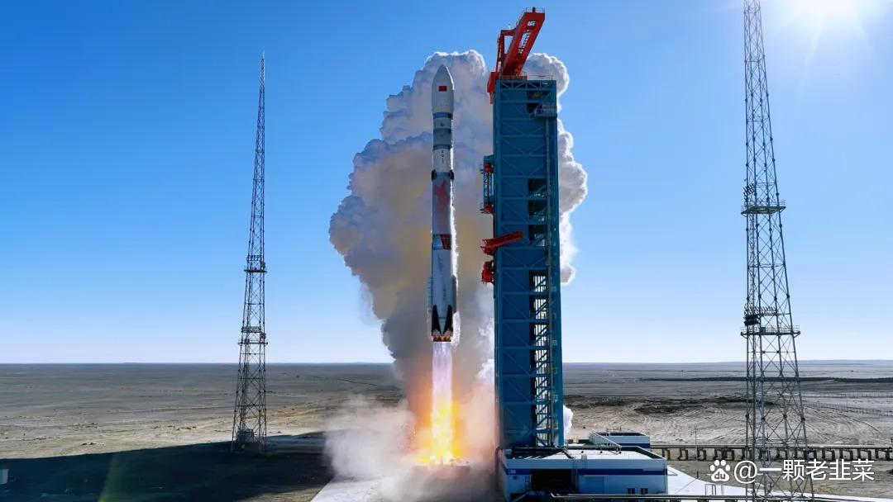
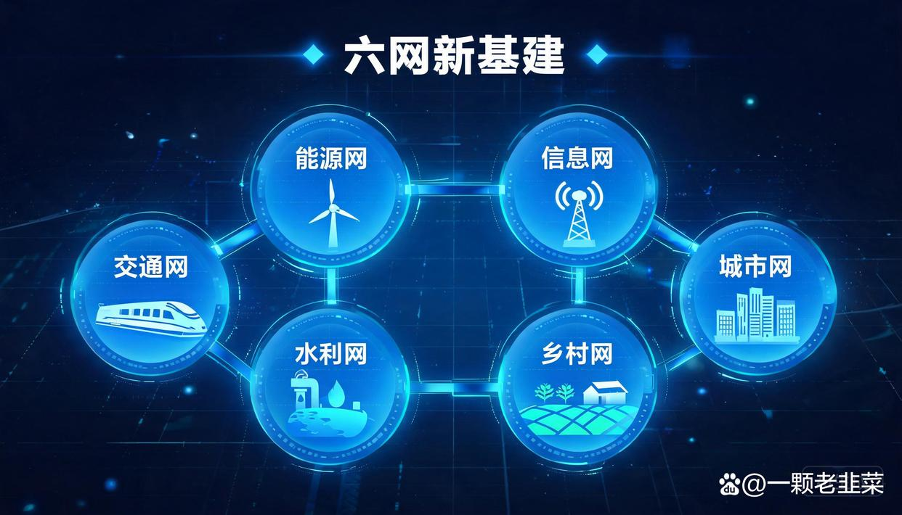
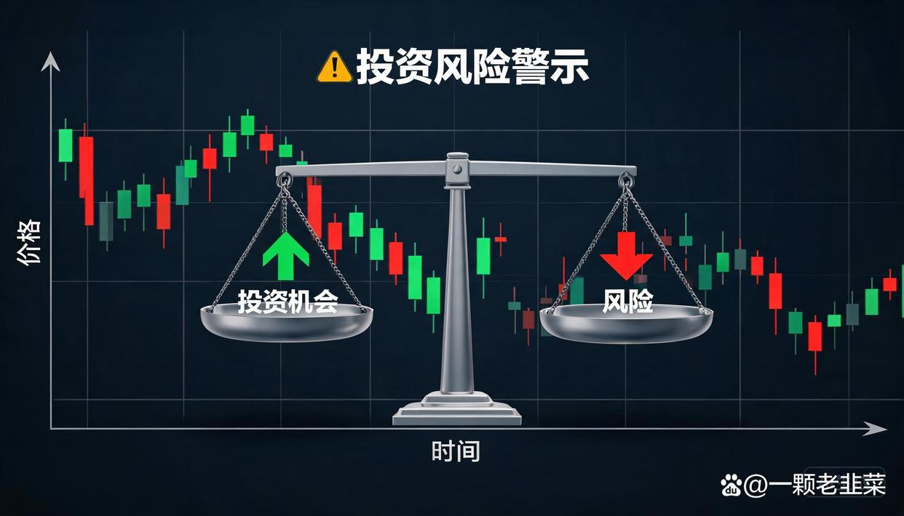

站在2026年4月底，回望过去一个月A股的表现，用精彩纷呈来形容毫不为过。沪指站稳4100点整数关口，周线四连阳；创业板指悄然创下2021年12月以来的新高；科创板50指数月末更是单日暴涨5%以上，创逾半年新高。日成交额稳定在2.3万亿到2.76万亿之间，市场赚钱效应显著。
然而，4月的最后一个交易日，16家公司同日戴帽ST，再次提醒我们——在全面注册制和新国九条两周年后的A股，分化是主旋律，选对方向远比猜对指数重要。
5月将至，十五五规划的开局之年进入深水区。4月底密集释放的政策信号、一季报揭示的业绩趋势以及地缘博弈重塑的全球资产格局，都在为5月行情埋下伏笔。本文将以数据和逻辑为锚，系统梳理5月最具爆发潜力的方向。

4月底政策信号：看似平淡，实则暗藏锋芒
4月28日召开的会议，是判断5月乃至下半年政策走向的关键窗口。这次会议通稿中，有几个信号值得反复咀嚼。
第一个信号：对经济形势的判断更加积极。 会议明确表述为起步有力，好于预期。这与2025年同期的回升向好基础仍需巩固形成鲜明对比。一季度GDP同比增长5.0%，高于市场一致预期的4.8%，正好落在了全年目标线之上。经济基本盘的稳固，意味着大规模刺激的紧迫性下降，但也意味着精准有效的结构性政策空间更大。
第二个信号是货币政策的措辞变化。 会议延续了更加积极的财政政策+适度宽松的货币政策的总基调，但通稿中未提及降准降息。这与此前市场普遍期待的双降形成了预期差。不过，央行行长潘功胜在4月多次强调降准降息仍有空间，加上央行在4月开展了4000亿MLF操作维持流动性合理充裕，说明政策工具箱并非关闭，而是更加注重节奏和时机。全球维度来看，美联储等五大央行4月均按兵不动，外部利率环境也进入观察期。
第三个信号，也是最重要的信号：六网新基建首次被点名。 会议明确提出，交通网、能源网、信息网、水利网、城市网、乡村网是新基建的核心方向。这个表述将过去分散的基建投资方向做了系统化整合，意味着十五五期间的基建投资不再是大水漫灌，而是聚焦于这六大网络体系的升级和互联互通。这为5月乃至未来数年的投资方向提供了清晰的政策坐标。
政策总结：5月的宏观环境大概率是流动性中性偏松+财政精准发力+科技结构性加码，全面牛市缺乏催化剂，但结构性牛市的条件更加成熟。
4月资金复盘：谁在买，买了什么？
4月A股市场的资金面呈现三个鲜明特征：
其一，量能充沛但并非狂热。 全月日均成交额维持在2.3万亿至2.76万亿区间，较2025年同期显著放大，但并未出现单日3万亿以上的极端天量。这说明当前市场的上涨有成交量的配合，但尚未进入情绪过热的危险区域。用温和放量来形容最为贴切。
其二，资金高度集中于科技主线。 AI算力/芯片板块是4月最耀眼的方向。寒武纪在4月末以20CM涨停的凌厉走势重夺A股股王宝座，芯原股份等半导体标的同步涨停。整个科创50指数月末单日涨幅突破5%，这在科创板历史上并不多见。与此同时，沪市主板2025年年报数据也给出了基本面支撑——全年营收49.49万亿元，净利润4.40万亿元，净利润同比微增0.5%，在复杂的宏观环境下实现了稳中有进。
其三，产业资本和机构资金的行为值得关注。 新国九条发布两周年之际，一个里程碑式的变化浮出水面——A股上市公司回购增持规模持续扩大，股东回报首超融资规模。投融资生态正在发生根本性转变。与此同时，一季度业绩超预期的科技股获得机构资金的持续加仓，筹码集中度明显提升。

资金面的核心启示：4月的资金不是盲目撒网，而是有选择性地向业绩确定+政策支持的科技龙头集中，这种结构性的资金行为，往往预示着主线行情远未结束。
5月潜力板块深度分析
AI算力/芯片——估值不是天花板，业绩才是加速器
AI算力/芯片是4月当之无愧的王者，问题是：5月还能追吗？
要回答这个问题，必须先看估值。根据机构测算，当前A股AI算力板块的整体PEG（市盈率相对盈利增长比率）约为0.96倍。这个数字意味着什么？回顾A股历史上的几轮牛市主线——2006-2007年的五朵金花、2014-2015年的互联网+、2019-2021年的新能源——主升浪见顶时的PEG普遍在2到3倍之间。0.96倍的PEG，不仅没有泡沫，反而处于业绩增长尚未被充分定价的阶段。
再看基本面。科创板龙头企业的年报和一季报普遍超预期，AI大模型训练和推理需求的指数级增长正在转化为实实在在的订单。国产算力芯片的替代进程在加速，尤其是在美国持续收紧高端芯片出口管制的背景下，国内下游客户主动转向国产方案的意愿空前强烈。
关键判断：AI算力/芯片在5月大概率不会重演4月的普涨格局，而是进入去伪存真的分化阶段。真正有订单、有技术壁垒、一季度业绩超预期的公司，将继续获得增量资金；而纯概念炒作的标的将面临回调压力。

半导体设备/材料——国产替代已从备选走向必选
如果说AI算力是进攻之矛，那么半导体设备和材料就是防守之盾。在中美科技博弈持续深化的背景下，半导体设备和材料的国产替代，已经从降本增效的可选项升级为供应链安全的必选项。
4月的市场已经给出了初步反馈：芯原股份涨停、多家半导体设备企业走强。但这绝不是终点。从产业逻辑看，中国半导体设备国产化率目前仍低于30%，材料领域低于20%，距离安全可控的目标还有巨大的空间。十五五规划将科技自立自强列为核心任务，这意味着未来五年，半导体设备和材料将享受持续的政策红利和市场需求双重驱动。
一季报是一个重要的验证窗口。设备企业的订单景气度、材料企业的产品认证进度以及下游晶圆厂的资本开支计划，构成了判断板块持续性的三角框架。目前来看，这个三角框架是稳固的。
商业航天——从讲故事到出业绩的临界点
商业航天在4月已经展现出强劲的爆发力。背后是多重催化因素的共振：政策层面，商业航天被明确纳入十五五战略性新兴产业；产业层面，多型号火箭成功发射，卫星互联网组网加速推进；市场层面，市场开始用下一个新能源的叙事逻辑来重新定价商业航天板块。
与2024-2025年的主题炒作不同，2026年的商业航天正在进入业绩兑现期。多家产业链公司的年报和一季报中，航天相关业务的收入占比和毛利率均出现显著提升。这意味着商业航天不再是遥远的未来，而是正在落地的产业浪潮。
5月关注点：新一轮发射计划、卫星互联网招标进展以及产业链上下游的业绩传导节奏。商业航天的特点是产业链长、辐射面广。从火箭制造到卫星载荷、从地面设备到运营服务，不同环节的业绩兑现存在时间差。

新能源（锂电/光伏/储能）——洗牌接近尾声，剩者为王
新能源板块在经历了2024-2025年的产能过剩和价格战后，正在步入新的周期阶段。4月出现了几个值得关注的边际变化：
一是锂矿板块率先活跃。碳酸锂价格在低位徘徊近一年后，出现了企稳回升的迹象。上游矿企的去库存接近尾声，叠加新能源汽车销量持续超预期，供需格局正在边际改善。
二是光伏出口退税取消，倒逼产业升级。4月正式取消的光伏出口退税政策，短期对组件出口企业构成利润压力，但中长期将加速行业洗牌。没有核心技术和成本优势的中小企业将被淘汰出局，龙头企业则将凭借技术和规模优势进一步巩固市场地位。剩者为王的逻辑，在光伏行业正在重演。
三是碳达峰碳中和考核办法正式印发，赋予了清洁能源更加明确的政策权重。储能作为新能源消纳的关键环节，将直接受益于考核体系的建立。
核心观点：新能源板块在5月可能不会成为最锋利的矛，但锂电和储能方向的估值已在历史低位，具有较高的安全边际，对于追求科技+价值平衡配置的资金来说，新能源是绕不开的选项。
军工——地缘冲突下的确定性溢价
4月的地缘舞台上，美伊冲突无疑是最大的黑天鹅。美国以史诗怒火"+"咆哮的狮子为代号的军事行动打击伊朗，导致霍尔木兹海峡多次关闭，国际油价一度突破100美元/桶。虽然4月8日达成了临时停火，但冲突的根源远未消除，后续局势仍充满变数。
军工板块的上涨逻辑分为两层：短期看地缘事件催化——每一次冲突升级都会触发军工股的阶段性脉冲行情；中长期看业绩兑现——十五五期间国防预算保持稳健增长，装备列装和升级换代带来持续的订单保障。一季报是检验军工企业订单交付和回款质量的关键窗口。
此外，中国限制稀土出口作为对中美贸易博弈的反制手段，也为军工上游的稀土永磁等细分方向带来了额外的催化。
：军工板块的波动性较大，事件驱动型行情往往来得快去得也快，5月能否走出持续性行情，取决于美伊冲突的实际演变和军工企业一季报的业绩成色。
六网新基建——会议点名的全新方向
这是会议带来的最新增量信息。六网——交通网、能源网、信息网、水利网、城市网、乡村网——被明确为新基建的核心框架。这六个方向涵盖了传统基建的智能化升级和新兴基础设施的建设，是十五五扩大有效投资的关键抓手。
从投资逻辑看，六网中最值得关注的三个方向是：
信息网
能源网、特高压、智能电网、充电桩网络等，与新能源板块形成联动。
交通网
六网概念的提出，意味着基建投资不再是简单的铁公基，而是带有科技属性和产业升级内涵的新型基础设施体系。这为市场提供了一个全新的投资叙事框架。

潜力股特征画像：#5月十大牛股出炉#的基因图谱
基于以上板块分析和对4月市场规律的总结，我认为我们可以勾勒出5月潜力牛股的共性特征：
特征一：一季报超预期是准入门槛。 在全面注册制和新国九条的监管环境下，业绩是硬通货。4月30日16家公司同日戴帽的事实说明，没有业绩支撑的公司正在被市场加速淘汰。一季报超预期的公司，不仅证明了自身的经营韧性，也获得了机构资金的信任票。
特征二：机构增持是信任背书。 4月的行情中，涨幅居前的科技股普遍出现了机构持仓集中度提升的趋势。机构不是接盘侠，机构增持代表着深度研究后的价值认可。
特征三：技术面突破是市场投票U 股价站上关键均线、成交量温和放大、形态结构稳健——这些技术特征是一季报利好被市场消化的直接体现。
特征四：题材催化共振是加速器。 好的公司还需要好的时机。叠加上文分析的AI算力、半导体、商业航天、新能源、六网等板块催化，将显著放大个股的上涨弹性。
特征五：低估值+高研发投入+行业龙头地位是护城河。 以PEG 0.96倍的AI算力板块为参照，估值合理甚至偏低、同时保持高研发强度、在细分领域拥有话语权的公司，兼具进攻性和防御性。
将这五大特征交叉筛选，就能从4000多家A股公司中大幅缩小目标范围。
风险提示：永远不要忽视硬币的另一面
好的投资分析，不仅要讲机会，更要讲风险。5月A股面临的不确定性包括但不限于：
地缘风险：美伊冲突虽然达成临时停火，但临时二字本身就意味着不确定性，一旦冲突再度升级，全球风险资产都将受到冲击，A股难以独善其身。
美联储政策变数：全球五大央行4月虽然按兵不动，但通胀数据的任何超预期反弹都可能改变市场对降息节奏的预期，这对全球流动性格局和A股外资流向都有直接影响。
业绩暴雷和戴帽风险：4月30日的集中戴帽不会是终点，5月是年报和一季报的后续消化期，不排除仍有公司暴露出财务问题。
解禁压力：5月是A股传统的大规模解禁窗口期，部分限售股解禁可能对相关个股和板块形成短期抛压。

结语
2026年的A股，正在经历从融资市到回报市的深刻转型。新国九条两周年的数据显示，股东回报首次超越融资规模——这是一个里程碑式的转变。在这个转型过程中，选股的重要性被提升到了前所未有的高度。
4月底的政策信号、资金动向和产业趋势，共同指向一个结论：5月的A股，结构性牛市仍将延续，核心主线依然是科技，但风格可能从纯成长向科技+价值平衡切换。 AI算力/芯片、半导体设备/材料、商业航天、新能源（锂电/储能）、军工、六网新基建——这六大方向构成了5月最值得关注的潜力板块版图。
但记住，方向对了只是第一步。在同一个板块内部，龙头和跟风的差距可能天壤之别。找到那些一季报超预期、机构增持、技术面突破、估值合理、有护城河的公司，才是穿越波动的关键。
风险提示：本文所载信息及分析判断仅供参考，不构成任何投资建议。股市有风险，投资需谨慎。本文部分数据来源于公开信息，作者力求但不保证信息的准确性和完整性。投资者据此操作，风险自担。
> 本文部分图片来源于网络，版权归原作者所有，如有疑问请联系删除。
免责声明
本文仅为个人研究与观点分享,基于公开资料整理,不构成任何投资建议。文中涉及个股仅作研究示例,不代表推荐。股市有风险,入市需谨慎。